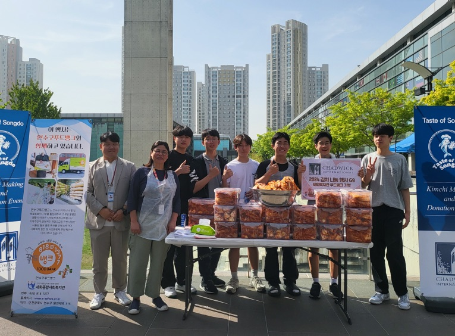
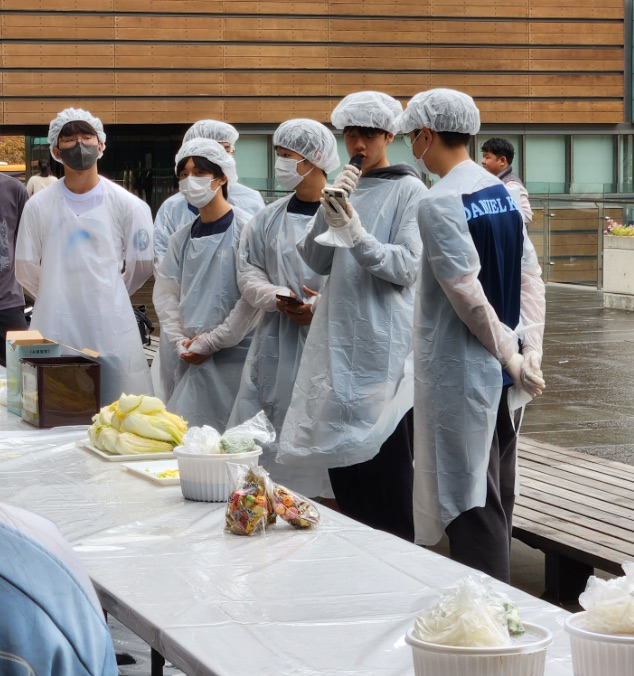
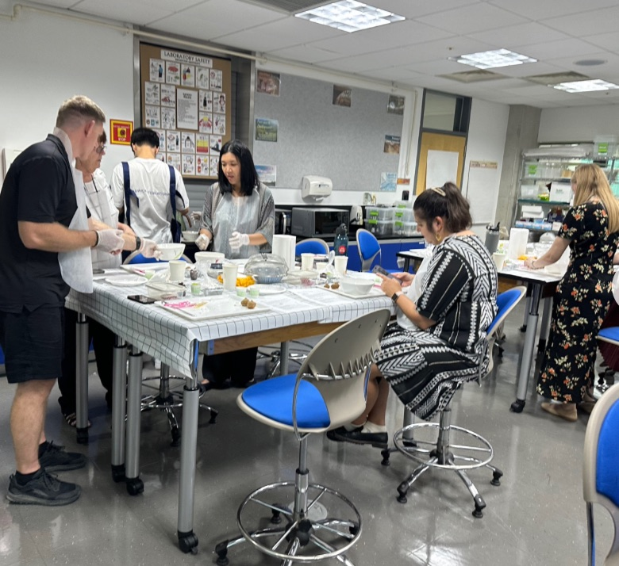
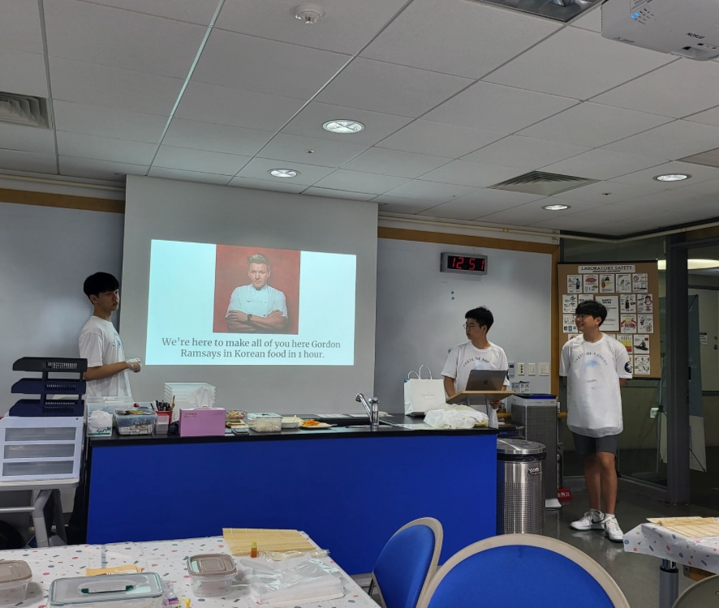

Other interests and activities
Taste of Songdo
A service club I founded to introduce Korean culinary culture to people from around the world.


Taste of Songdo Club
I founded Taste of Songdo, a service club that introduces Korean culinary culture to people from other countries, and I have led it since Grade 9.
Every year, we hold a kimchi-making event with more than 100 participants and donate about 100 kg of kimchi to the national food bank. We have also hosted Korean cooking classes on several occasions for more than 50 foreign visitors.
Each year, the school’s Director of Curricular Collaboration asks our club to host an orientation and cooking class for the 10+ new faculty members joining the school.
- 100+ participants at the annual kimchi-making event
- ~100 kg of kimchi donated to the national food bank each year
- Korean cooking classes for 50+ foreign visitors
- Annual orientation & cooking class for 10+ new faculty

